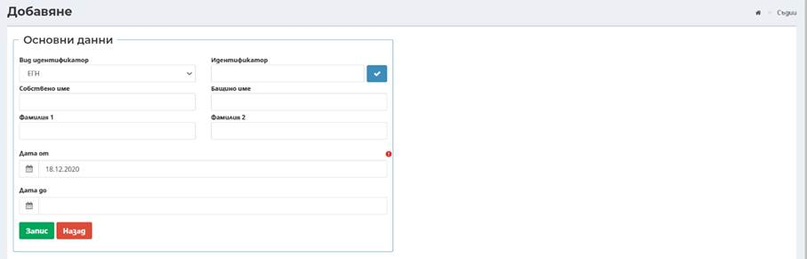
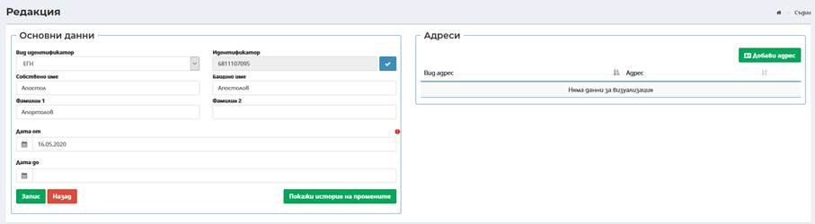
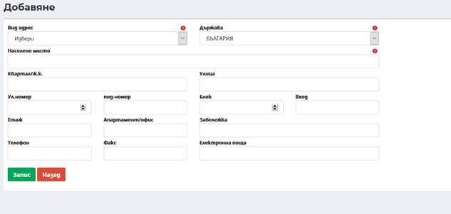
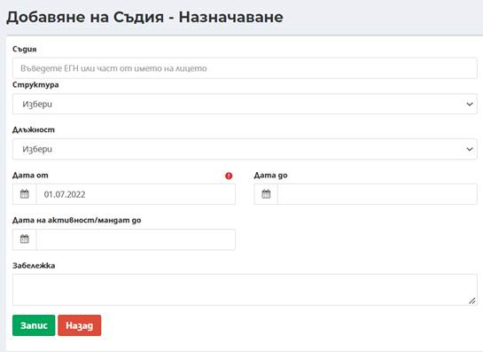
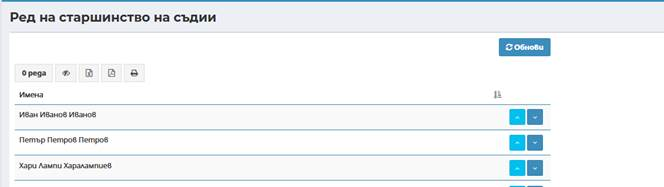
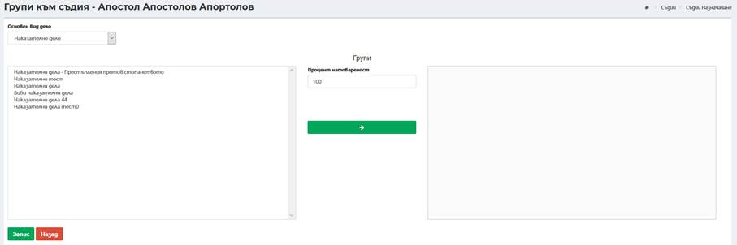
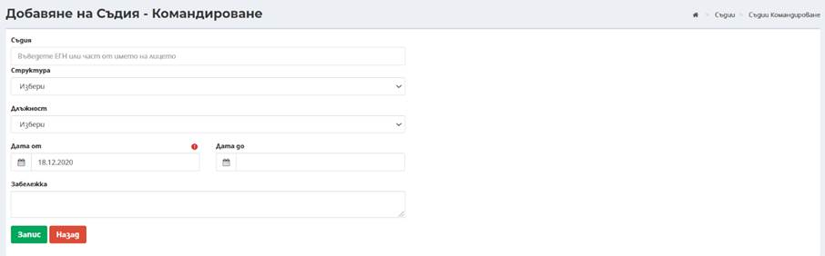
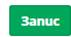

В меню Съдии става създаването на профили на съдии, назначаване на съдии, командироване в друг съд, въвеждане на болнични дни и отпуски на съдиите.
9.1.1.1 Съдии
В екрана на меню Съдии -> Съдии се визуализират всички съдии назначени и командировани в конкретен съд.
Посредством
бутон
 има
възможност за добавяне на нов съдия, чрез въвеждане на необходимите данни:
има
възможност за добавяне на нов съдия, чрез въвеждане на необходимите данни:

Вид на идентификатор – по подразбиране е избран вид идентификатор ЕГН;
- Идентификатор – въвежда се ЕГН на лицето;
- Имена за лицето – въвеждат се в съответните полета: Собствено име, Бащино име, Фамилия и Фамилия 2;
- Дата от – въвежда се начална дата на активност на профила на съдията. По подразбиране е въведена текуща дата, която може да бъде променена от потребител;
- Дата до – въвежда се крайна дата на активност на профила на съдията. Полето не е със задължителен характер.
След въвеждане на всички изискуеми данни и избор на бутон Запис успешно се добавя нов профил на съдия.

В дясната част на екрана се визуализира секция Адреси, в която могат да бъдат въведени данни за адресът/ите за съдията, посредством бутон Добави адрес . Секцията не е със задължителен характер.
Нов адрес за съответния съдия се въвежда при избор на бутон Добави адрес като се зареждат полета в следният екран:

Забележка: Въвеждат се данните за адрес, като задължително трябва да се въведат вид адрес, държава и населено място.
- Вид адрес – избор на вид на адрес от номенклатура;
- Държава – избор от номенклатура за конкретната държава за лицето, като по подразбиране в полето е заредено България;
- Населено място – чрез автоматично попълване след търсене по част от името (въвеждат се минимум три букви от населеното място) и се предлага потребителя да избере съответното населено място;
- Квартал/ж.к. – чрез автоматично попълване след търсене по част от името (въвеждат се минимум три букви от квартал/ж.к.);
- Улица - чрез автоматично попълване след търсене по част от името (въвеждат се минимум три букви от наименованието на улица);
- Ул. номер – въвежда се номера на улицата;
- Под-номер - въвежда се под-номера на улицата;
- Блок – въвежда се номер на блок;
- Вход - въвежда се номер на вход;
- Етаж - въвеждат се данни за етаж;
- Апартамент/офис - въвеждат се данни за апартамент/офис;
- Забележка – при необходимост може да се въведе допълнителна информация;
- Телефон – въвежда се стационарен телефон или мобилен номер;
- Факс - въвежда се номер на факс;
- Електронна поща – въвежда се електронна поща на лицето.
Забележка: Адрес в друга държава – в свободно текстово поле се въвежда адрес.
Посредством бутон има възможност за корекция на данните на съдия:
Екранът за редакция съдържа аналогични полета като тези при въвеждане. Не може да се редактира идентификатор на съдията.
9.1.1.2 Назначаване
От меню Съдии->Назначаване или посредством избор на бутон от меню Съдии->Съдии има възможност за назначаване на въведен съдия в даден съд. При назначаване на съдия има възможност за добавяне на съдебни групи за разпределение, в които съдията да участва.
От екран със списък с всички създадени профили на съдии в даден съд посредством избор на бутон Добави след зареждане на съответната екранна форма се въвеждат необходими данни за назначаване на съдия:

- Съдия – при въвеждане на минимум три последователни символа, системата автоматично търси и предлага за избор списък от съдии;
- Структура – избира се от падащ списък с организационни единици, въведени в организационната структура на конкретния съд;
- Длъжност – избира се от падащ списък с възможни длъжности за магистрати;
- Дата от – въвежда се начална дата на активност на съдията на избраната длъжност. По подразбиране е въведена текуща дата, която може да бъде променена от потребител;
- Дата до – въвежда се крайна дата на активност на съдията на избраната длъжност. Полето не е със задължителен характер;
- Дата на активност/мандат до - ограничава участието на съдии в случайно разпределение без да ограничава извършване на действия по вече разпределени дела.
Пример: на съдия 1 в командироване в съд Y са заложени следните дати: Дата от: 01.01.2022 г., Дата до: 31.07.2022 г., Дата на активност/мандат: 30.06.2022 г. Съдията ще може да участва в заседания и да подписва съдебни актове след 30.06.2022 до 31.07.2022 г., но ще участва в случайно разпределение за нови дела до 30.06.2022 г.).
- Забележка – при необходимост може да се въведе допълнителна информация.
След въвеждане на всички изискуеми данни и избор на бутон Запис успешно се добавя ново назначаване на съдия.
От екран със списък с всички създадени профили на съдии в даден съд посредством избор на бутон след зареждане на съответната екранна форма се въвеждат необходими данни за определяне Ред на старшинство на съдии:
Списъкът се пренарежда посредством бутоните .

От екран с назначени съдии посредством въвеждане на минимум три последователни символа, системата автоматично търси и предлага за избор списък от назначени съдии. Подредбата на съдиите по старшинство ще е валидна за всички дела и след пренареждане автоматично ще се отрази във всички състави по дела).
Посредством бутон Редакция има възможност за редакция на въведеното назначаване на съдия. Екранът за редакция съдържа аналогични полета като тези при въвеждане.
Посредством избор на бутон Групи има възможност за добавяне на съдебни групи за разпределение към профила на даден съдия.
Добавяне на съдебни групи за разпределение на даден съдия става от екран за Групи към съдия. Има възможност за филтриране на групи по основен вид дело:

Добавяне на група става посредством маркиране на една или повече групи- маркиране на няколко групи става посредством маркиране на една група, задържане на бутон ctrl на клавиатурата и маркиране на останалите необходими групи. Маркиране на няколко последователни или всички групи става посредством избор на първата група, задържане на бутон shift на клавиатурата и маркиране на последната от списък с необходими групи.
За избраната/избраните групи се въвежда приложим процент на натовареност в поле Процент натовареност. Избраният процент ще е приложим при участие на съдията в случайно разпределение в избраните групи.
След въвеждане на процент на натовареност се избира бутон Прехвърляне , с което избраните групи се прехвърлят с въведения процент натовареност в профила на съдията. След избор на всички групи за съдията със съответния процент на натовареност се избира бутон Запис , с което успешно се добавят групи за разпределение на съда към профила на съдията.
Премахване на група от профила на съдията става посредством избор на бутон Премахване , след което се избира бутон Запис. При премахване на група от профила на съдията, той не участва в следващи разпределения в тази група, но разпределени в тази група дела остават.
Забележка: Функционалността за управление на създадените групи за разпределение на съда предоставя възможност за добавяне на съдебни групи за разпределение към профила на даден съдия или асоцииране на съдия към съдебна група за разпределение.
Посредством бутон Заместване на съдии се дава възможност за заместване за един или няколко заместващи за един период, при отсъствие на съдия-докладчик по дело. В поле Заместник се въвежда конкретно избрания съдия. Добавянето става през меню Администриране ->Номенклатури->Съдии->Назначаване и избор на бутон Заместване-> Добави.
Отваря се прозорец, в който следва да се попълнят следните данни:
- Съдия - при въвеждане на минимум три последователни символа, системата автоматично търси и предлага за избор списък от съдии;
- Заместник - при въвеждане на минимум три последователни символа, системата автоматично търси и предлага за избор списък от съдии;
- Дата от – въвежда се начална дата на заместването на съдията. По подразбиране е въведена текуща дата, която може да бъде променена от потребител;
- Дата до – въвежда се крайна дата на заместването на съдията. Полето не е със задължителен характер.
9.1.1.3 Болнични дни
От меню Съдии->Болнични дни става въвеждане на периоди на болнични за съдии. За периодите на въведените болнични системата автоматично изключва от случайно разпределение съответния съдия.
Въвеждане на болнични става посредством избор на бутон Добави чрез въвеждане на необходимите данни:
- Съдия - при въвеждане на минимум три последователни символа, системата автоматично търси и предлага за избор списък от съдии;
- Дата от – въвежда се начална дата на болничен на съдията. По подразбиране е въведена текуща дата, която може да бъде променена от потребител;
- Дата до – въвежда се крайна дата на болничен на съдията. Полето не е със задължителен характер.
- Забележка – при необходимост може да се въведе допълнителна информация.
След
въвеждане на всички изискуеми данни и избор на бутон Запис
 успешно се добавя нов период на болнични на съдия.
успешно се добавя нов период на болнични на съдия.
9.1.1.4 Командироване
Важно: Всички действия по командироването на съдии се извършва от приемащия съд (съдът в който е командировано лицето)!
Приемащият съд трябва да извърши следните действия: От меню Администриране -> Номенклатури->Съдии->Командироване или посредством избор на бутон от меню Съдии->Съдии чрез избор на бутон Добави, се изтегля командирования съдия.
Приемащият съд, в който е командирован съдията трябва да добави начална дата на командироване и по този начин съдията се изключва автоматично от следващи случайни разпределения в съда, в който е титуляр.
При добавяне на крайна дата на командироване, чрез въвеждане на Дата до -, периода на командирова се прекратява и съдията отново участва в случайното разпределение, в съда в който е титуляр.
Въвеждане на командироване става посредством избор на бутон Добави чрез въвеждане на необходимите данни, аналогични на тези при назначаване:

- Съдия - при въвеждане на минимум три последователни символа, системата автоматично търси и предлага за избор списък от всички съдии в системата;
- Структура – избира се от падащ списък с организационни единици въведени в организационната структура на конкретния съд;
- Длъжност – избира се от падащ списък с възможни длъжности за магистрати;
- Дата от – въвежда се начална дата на активност на командироване на съдията в съда. По подразбиране е въведена текуща дата, която може да бъде променена от потребител;
- Дата до – въвежда се крайна дата на командироване на съдията на избраната длъжност. Полето не е със задължителен характер.
- Забележка – при необходимост може да се въведе допълнителна информация.
След
въвеждане на всички изискуеми данни и избор на бутон Запис

От екран с назначени съдии посредством въвеждане на минимум три последователни символа, системата автоматично търси и предлага за избор списък от командировани съдии.
Посредством бутон Редакция има възможност за редакция на въведеното командироване на съдия. Екранът за редакция съдържа аналогични полета като тези при въвеждане.
Добавяне на групи към профила на командирования съдия става по аналогичен начин на добавяне на съдебни групи за разпределение при назначаване на съдия, описан по-горе.
9.1.1.5 Отпуски
От меню Съдии->Отпуски става въвеждане на периоди на отпуски за съдии. За периодите на въведените отпуски системата автоматично изключва от случайно разпределение съответния съдия.
Въвеждане на отпуски става посредством избор на бутон Добави чрез въвеждане на необходимите данни:
- Съдия - при въвеждане на минимум три последователни символа, системата автоматично търси и предлага за избор списък от съдии;
- Дата от – въвежда се начална дата на отпуска на съдията. По подразбиране е въведена текуща дата, която може да бъде променена от потребител;
- Дата до – въвежда се крайна дата на отпуска на съдията. Полето не е със задължителен характер;
- Забележка – при необходимост може да се въведе допълнителна информация.
След
въвеждане на всички изискуеми данни и избор на бутон Запис
 успешно се добавя нов период на отпуска на съдия.
успешно се добавя нов период на отпуска на съдия.